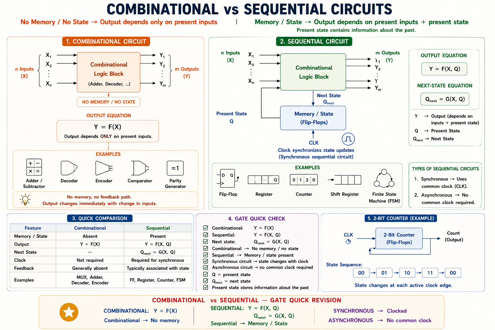
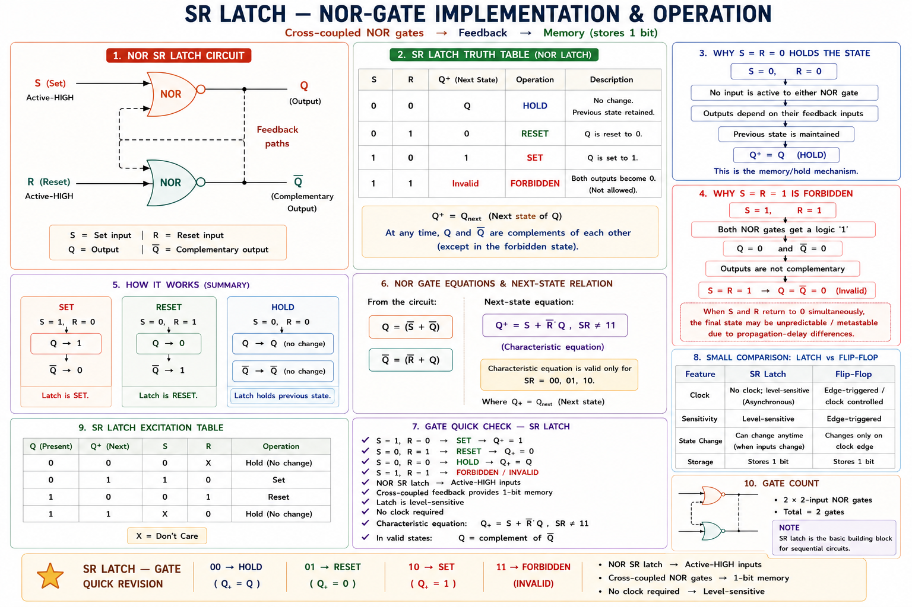
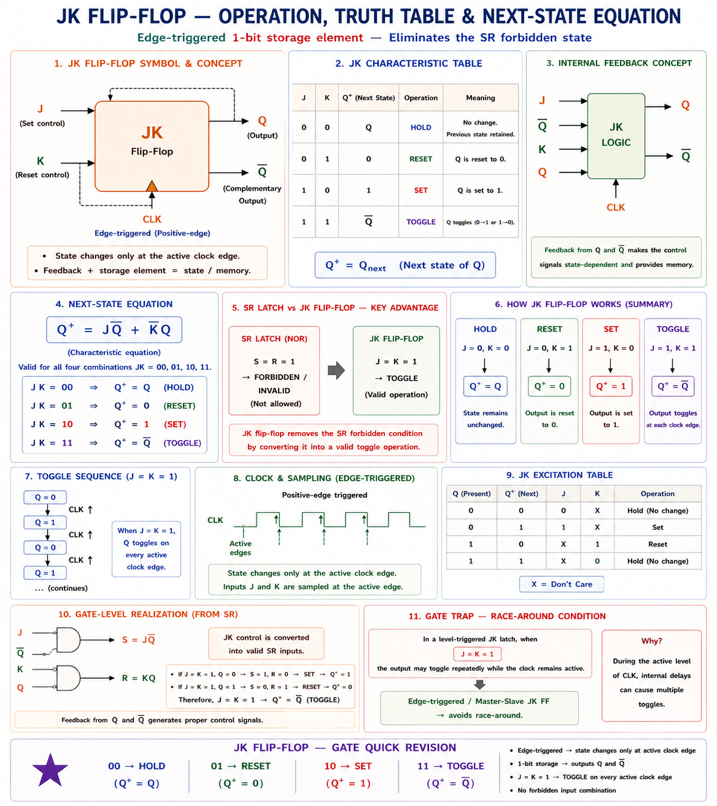
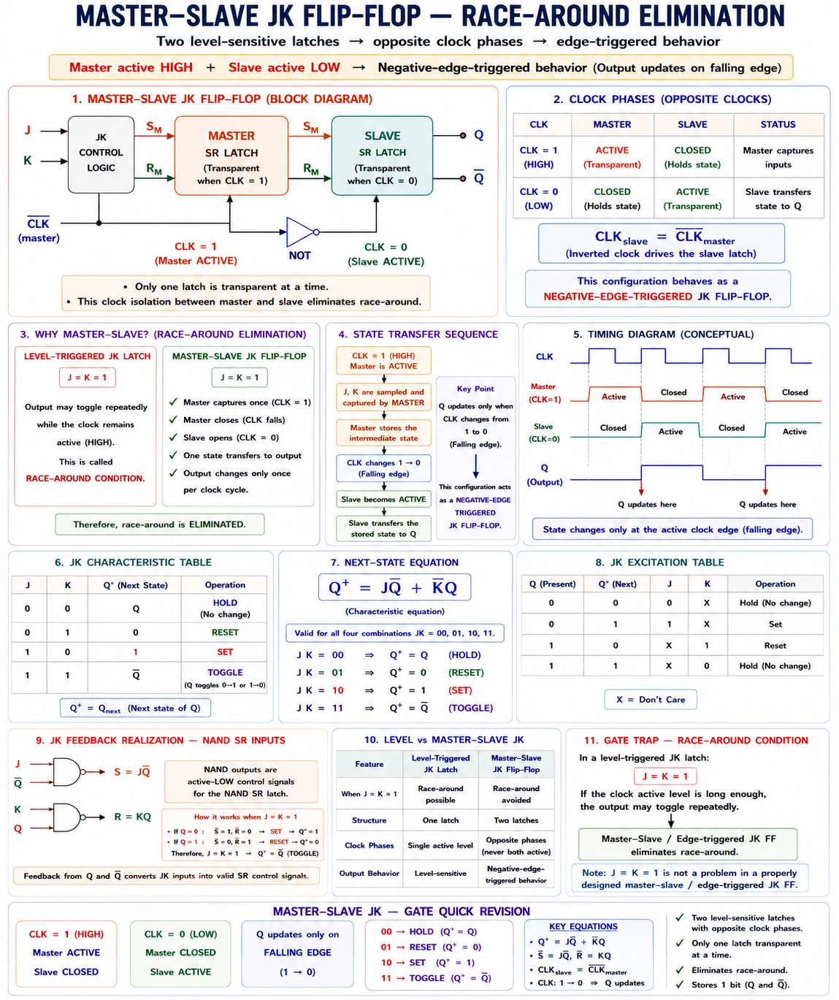
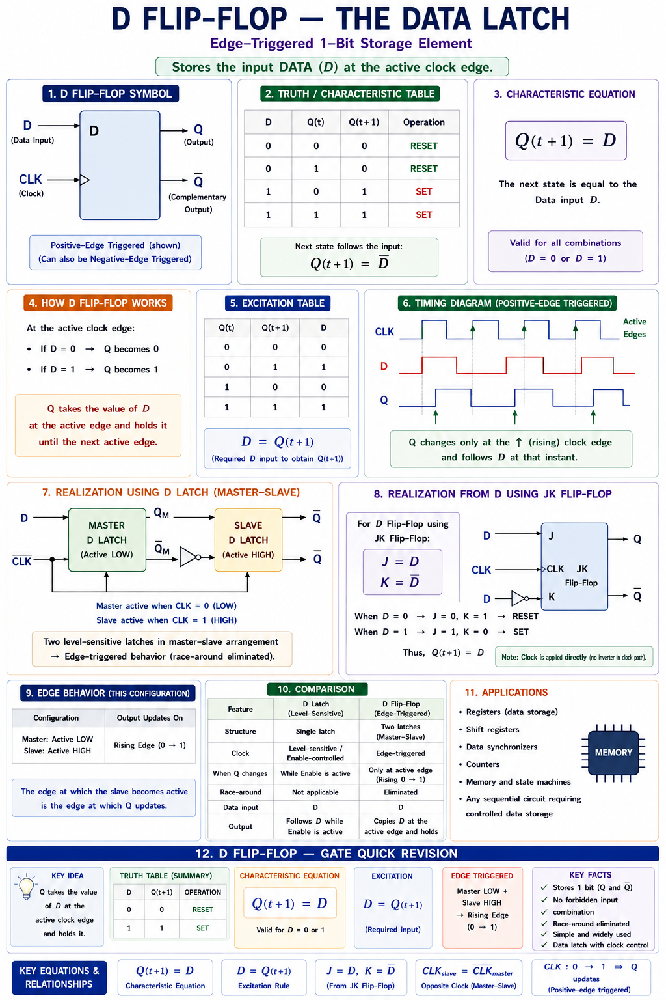

Flip-flops, registers, counters, and state machines — comprehensive GATE & IES coverage with full derivations, timing diagrams, state tables, worked numericals, and exam-oriented insights drawn from standard textbooks.
A combinational circuit has no memory — its output depends only on present inputs. A sequential circuit has memory — its output depends on present inputs and the history of past inputs. This memory capability is what enables counters, registers, state machines, and all digital systems that need to "remember" something.
Think of a traffic light controller. It does not decide the next phase based only on the present state of the road — it keeps track of how long each phase has been active, what the previous phase was, and then decides the next. This kind of time-dependent, history-dependent behaviour is sequential logic. Without sequential circuits, there would be no CPUs, no RAM, no counters, no communication protocols — essentially, no digital computers.[1]
From the exam perspective, sequential circuits carry the highest weightage in digital electronics across GATE (EC and EE), IES (E&T), and all major PSU examinations. Questions typically test understanding of flip-flop operation, excitation tables, state diagrams, counter design, and register structures.
| Feature | Combinational Circuit | Sequential Circuit |
|---|---|---|
| Memory | No | Yes (flip-flops / latches) |
| Output depends on | Present inputs only | Present inputs + past state |
| Clock needed? | No | Usually yes |
| Examples | Adder, MUX, Decoder | Counter, Register, CPU |
| Design basis | Boolean algebra | State tables & excitation equations |
| Feedback path | No | Yes (output fed back to input) |

In GATE, when a question says "ripple counter" it is asynchronous. When it says "synchronous counter" all flip-flops are clocked simultaneously. This distinction affects propagation delay calculations — a very common numerical topic.
Imagine a light switch that can be turned ON ("Set") and turned OFF ("Reset") by two separate buttons. Once you press Set, the light stays ON even after you release the button. Once you press Reset, the light stays OFF. The state of the light (ON or OFF) is remembered even when both buttons are released. This is exactly what an SR flip-flop does — it is the most basic memory element.[2]

| S | R | Q(t) Present | Q(t+1) Next | Condition |
|---|---|---|---|---|
| 0 | 0 | Q | Q (no change) | Hold / Memory |
| 0 | 1 | × | 0 | Reset |
| 1 | 0 | × | 1 | Set |
| 1 | 1 | × | Forbidden ⚠️ | Undefined / Race |
When S = R = 1, both outputs Q and Q̄ are driven to 0 simultaneously (for NOR implementation), violating the complementary requirement Q ≠ Q̄. When inputs return to 00, the circuit enters an indeterminate state. This is the forbidden/invalid condition of the SR flip-flop. GATE frequently asks which input combination is forbidden.
The basic latch is level-triggered — it responds to inputs whenever they are asserted. A clocked SR flip-flop adds an enable/clock input, so the flip-flop is sensitive only when CLK = 1 (level-triggered) or at a clock edge (edge-triggered). The characteristic equation is:
| Q(t) | Q(t+1) | S | R |
|---|---|---|---|
| 0 | 0 | 0 | × |
| 0 | 1 | 1 | 0 |
| 1 | 0 | 0 | 1 |
| 1 | 1 | × | 0 |
× = don't care. Excitation tables tell you what inputs you need to produce a desired transition — key for sequential circuit design.
The truth table asks: "Given inputs S and R, what is Q(t+1)?" The excitation table asks the reverse: "Given that I want Q to go from Q(t) to Q(t+1), what must S and R be?" Excitation tables are used when designing sequential circuits from a state diagram.
The JK flip-flop solves the forbidden state problem of the SR flip-flop. It was named after Jack Kilby, a Nobel Laureate who invented the integrated circuit. The key insight: instead of making J = K = 1 forbidden, let it do something useful — toggle the output.[3]

| J | K | Q(t+1) | Operation |
|---|---|---|---|
| 0 | 0 | Q(t) | No Change (Hold) |
| 0 | 1 | 0 | Reset |
| 1 | 0 | 1 | Set |
| 1 | 1 | Q̄(t) | Toggle ← Key feature! |
Derivation insight: Compare with SR — substitute J for S and K̄ for R̄. The JK includes the toggle row (\( J=K=1 \)) as \(\bar{Q}\cdot 1 + 1\cdot Q = \bar{Q} + Q\cdot\bar{K}\) evaluated at K=1: \(Q(t+1) = J\bar{Q} + \bar{K}Q\). At \( J=K=1 \): \(Q(t+1) = \bar{Q} + 0 = \bar{Q}\). The toggle behaviour emerges naturally.
| Q(t) | Q(t+1) | J | K |
|---|---|---|---|
| 0 | 0 | 0 | × |
| 0 | 1 | 1 | × |
| 1 | 0 | × | 1 |
| 1 | 1 | × | 0 |
The JK excitation table has more don't cares than SR — this makes counter design with JK flip-flops often simpler (fewer gates needed).
In a level-triggered JK flip-flop, when J = K = 1, the output continuously toggles as long as CLK = 1, creating an unstable racing condition. Solution: use master-slave JK flip-flop or edge-triggered JK flip-flop. GATE asks about this frequently in gate-delay analysis questions.
Two SR latches connected in series. The master latch is active when CLK = 1, and the slave latch is active when CLK = 0. The output changes only at the falling edge of the clock, eliminating the race-around condition.

The D flip-flop (Delay or Data flip-flop) is the simplest and most widely used flip-flop. It has one data input D and one clock. Whatever is at D when the clock edge arrives is captured and stored. Think of it as a camera shutter — it "photographs" the data value at exactly the clock edge and holds that value until the next clock edge.[1]
| D | Q(t+1) | Operation |
|---|---|---|
| 0 | 0 | Reset |
| 1 | 1 | Set |
The D flip-flop is derived from the SR flip-flop by connecting S = D and R = D̄. This ensures S and R are always complements, so the forbidden state S = R = 1 can never occur.
| Q(t) | Q(t+1) | D |
|---|---|---|
| 0 | 0 | 0 |
| 0 | 1 | 1 |
| 1 | 0 | 0 |
| 1 | 1 | 1 |
No don't cares — D must exactly equal Q(t+1). Simple but requires precise logic.
T stands for Toggle. When T = 1, the flip-flop flips its output on every active clock edge. When T = 0, it holds. Think of it as a light switch that flips every time you press T = 1. A string of T flip-flops with T always tied to 1 is the simplest counter possible — each stage divides the frequency by 2. This is the ripple counter![2]
| T | Q(t+1) | Operation |
|---|---|---|
| 0 | Q(t) | No Change |
| 1 | Q̄(t) | Toggle |
| Q(t) | Q(t+1) | T |
|---|---|---|
| 0 | 0 | 0 |
| 0 | 1 | 1 |
| 1 | 0 | 1 |
| 1 | 1 | 0 |
T = 1 whenever Q changes; T = 0 whenever Q stays the same. Key for designing synchronous counters.
| Property | SR | JK | D | T |
|---|---|---|---|---|
| Inputs | S, R | J, K | D | T |
| Forbidden state | Yes (\( S=R=1 \)) | No | No | No |
| Toggle ability | No | Yes (\( J=K=1 \)) | No | Yes (\( T=1 \)) |
| Char. equation | \( S+\bar{R}Q \), \( SR=0 \) | \( J\bar{Q}+\bar{K}Q \) | \( D \) | \( T\oplus Q \) |
| Don't cares in excitation | 2 | 4 (most) | 0 (least) | 0 |
| Primary use | Latches | Counters | Registers/RAM | Counters |
| GATE weightage | Medium | High | High | High |
A register is a collection of flip-flops (typically D flip-flops) that store a multi-bit binary word. An n-bit register stores n bits. Every flip-flop shares the same clock, so all bits are captured simultaneously on the active clock edge.[1] Registers are the building blocks of CPU general-purpose registers, pipeline registers, and memory address registers.

For an n-bit SISO register, to read all n bits serially out, you need n clock pulses. The register can also function as a divide-by-2ⁿ frequency divider when operated as a ring counter or twisted ring counter.
A bidirectional shift register can shift data either left or right, controlled by a mode-select signal M. When M = 1: shift right (serial in from left, each Qi → Di+1). When M = 0: shift left. A 4-bit universal shift register (like the 74194 IC) supports SISO, SIPO, PISO, PIPO, shift-left, and shift-right — all in one package.
A counter is a sequential circuit that cycles through a predetermined sequence of binary states in response to clock pulses. It is the most common application of flip-flops. An n-bit counter can count through \(2^n\) states. Counters are used in digital clocks, event counters, frequency dividers, timers, and ADC circuits.
In a ripple counter, the output of each flip-flop drives the clock of the next. The "ripple" refers to the way a carry propagates through the chain — like ripples in water. All T flip-flops have T = 1, so each stage toggles (divides by 2) each time its input falls.[3]
This is one of the most frequently tested GATE numericals. Because each flip-flop in a ripple counter clocks the next, the total propagation delay is cumulative:
where n = number of flip-flops, t_p = propagation delay of each FF
In a synchronous counter, all flip-flops are clocked simultaneously by the same clock signal. The T inputs are derived from the state of lower-order bits. This eliminates cumulative delay, so the maximum frequency is determined only by the combinational logic delay plus one flip-flop delay.[2]
| Feature | Ripple Counter | Synchronous Counter |
|---|---|---|
| Clock | Each FF clocked by previous Q | All FFs share same clock |
| Propagation delay | n × t_p (cumulative) | t_p + t_comb (fixed) |
| Max frequency | Lower (limited by n) | Higher |
| Glitches | Yes — decoding hazard | No |
| Circuit complexity | Simple | More gates needed |
| Power | Lower | Higher |
A Mod-N counter counts from 0 to N−1 and then resets to 0. It requires \(\lceil \log_2 N \rceil\) flip-flops. If N is not a power of 2, we need feedback to force the reset.[3]
Method 1 (Feedback Reset): Let the counter run naturally, detect state N using a
NAND gate on the appropriate bits, and use the output to CLR (clear) all flip-flops
asynchronously. This creates a glitch at state N for a brief instant.
Method 2
(Synchronous Design using Excitation Tables): Design a synchronous counter by
writing the full state table, writing excitation equations for each FF input, minimising with
K-maps, and implementing with gates. No glitch.
We need 3 flip-flops (since \(2^2 = 4 < 6 \leq 8=2^3\)). States 6 (110) and 7 (111) are unused don't-care states.
| State | \( Q_2 Q_1 Q_0 \) | Next \( Q_2 Q_1 Q_0 \) | J₂K₂ | J₁K₁ | J₀K₀ |
|---|---|---|---|---|---|
| 0 | 000 | 001 | 0× | 0× | 1× |
| 1 | 001 | 010 | 0× | 1× | ×1 |
| 2 | 010 | 011 | 0× | ×0 | 1× |
| 3 | 011 | 100 | 1× | ×1 | ×1 |
| 4 | 100 | 101 | ×0 | 0× | 1× |
| 5 | 101 | 000 | ×1 | 0× | ×1 |
| 6 | 110 | ××× | ×× | ×× | ×× |
| 7 | 111 | ××× | ×× | ×× | ×× |
After K-map minimisation (including don't-cares at states 6 and 7):
A Finite State Machine is an abstract model of a sequential circuit. It consists of a finite number of states, transitions between states triggered by inputs, and outputs. FSMs are the theoretical foundation of all digital sequential systems — from vending machines to CPU control units.[4]
| Feature | Moore Machine | Mealy Machine |
|---|---|---|
| Output depends on | State only | State + current input |
| Output changes | Only at clock edges | Immediately with input |
| Number of states | Generally more | Generally fewer |
| Output glitches | No (synchronous output) | Possible |
| Diagram notation | Output in state circle | Output on transition arrow |
| Design complexity | More states → more FFs | Fewer states → fewer FFs |
| Present State | Next State | Output | ||
|---|---|---|---|---|
| PS | NS (X=0) | NS (X=1) | Z (X=0) | Z (X=1) |
| S0 | S0 | S1 | 0 | 0 |
| S1 | S0 | S2 | 1 | 0 |
| S2 | S0 | S2 | 0 | 1 |
For a Moore machine, the output column has entries per state only (not per input column). For Mealy, output depends on both present state and input — shown per column.
Two states are equivalent if for every input sequence they produce identical output sequences and transition to equivalent next states. Removing equivalent states reduces hardware complexity. This is tested in GATE through state table equivalence problems.
Step 1: Group states with the same output (Moore) or same output for all inputs
(Mealy).
Step 2: For each group, check if next states (under all inputs) fall in the
same group. If not, split the group.
Step 3: Repeat until no more splits. All states in the same final group are
equivalent and can be merged.
| Topic | GATE Probability | Typical Marks |
|---|---|---|
| Counter design (Mod-N, ripple vs. sync) | 🟢 HIGH | 2–5 marks |
| JK / D Flip-Flop characteristic equations | 🟢 HIGH | 1–2 marks |
| Shift register operations & delay | 🟢 HIGH | 1–2 marks |
| State machine output (Moore vs. Mealy) | 🟡 MEDIUM | 2–3 marks |
| Excitation table-based design | 🟡 MEDIUM | 2–3 marks |
| Race-around condition, master-slave | 🟡 MEDIUM | 1 mark |
| SR forbidden state | 🔴 LOW | 1 mark |
| State reduction / equivalence | 🔴 LOW | 2 marks |
A 4-bit ripple counter uses JK flip-flops each with propagation delay of 10 ns. What is the maximum frequency of operation?
Solution: Total delay = 4 × 10 = 40 ns. \(f_{max} = \frac{1}{40 \times 10^{-9}} = 25 \text{ MHz}\).
The characteristic equation of a D flip-flop is:
Solution: The D flip-flop simply stores the input D. \( Q(t+1) = D \) regardless of Q(t). This is the simplest possible characteristic equation.
A Moore machine has outputs associated with:
Solution: In a Moore machine, the output is a function of the present state only. It changes synchronously with state transitions, not with input changes.
A JK flip-flop with J = 1, K = 1 and Q(t) = 0 is given a clock edge. What is Q(t+1)?
Solution: \( J=K=1 \) → Toggle. \( Q(t)=0 \), so \( Q(t+1) = \bar{Q}(t) = 1 \). From the characteristic equation: \( Q(t+1) = J\cdot\bar{Q} + \bar{K}\cdot Q = 1\cdot 1 + 0\cdot 0 = 1 \). ✓
1. Confusing excitation table with truth table: The excitation table is the
inverse of the characteristic table — know the direction of lookup.
2. Ripple counter delay: Students forget it's cumulative (n × t_p), not just
t_p.
3. SR forbidden state: Students say "both outputs are 1" but the real problem
is that when S=R returns to 0, the state is unpredictable, not just wrong.
4. Moore vs. Mealy output timing: In Moore, output is synchronous (changes at
clock edge). In Mealy, output is asynchronous (changes immediately with input). This affects
glitch analysis.
5. Number of FFs for Mod-N: You need \(\lceil \log_2 N \rceil\) flip-flops —
not \(\log_2 N\) or N.
Step 1: Write the T flip-flop characteristic equation: $$Q(t+1) = T \oplus Q(t)$$
Step 2: Write the JK flip-flop characteristic equation: $$Q(t+1) = J\overline{Q(t)} + \overline{K}\,Q(t)$$
Step 3: Expand T ⊕ Q: $$T \oplus Q = T\bar{Q} + \bar{T}Q$$
Step 4: Match coefficients: $$J\bar{Q} + \bar{K}Q = T\bar{Q} + \bar{T}Q$$ $$\Rightarrow J = T, \quad \bar{K} = \bar{T} \Rightarrow K = T$$
Physical meaning: When T = 1: J = K = 1 → toggle (same as \( T=1 \)). When T = 0: J = K = 0 → hold (same as \( T=0 \)). The conversion requires zero additional gates — just wire J and K to the same input T.
In a synchronous counter, all flip-flops are clocked simultaneously. The critical path is:
| Step | Present State | Input | Next State | Output (Moore: of PS) |
|---|---|---|---|---|
| 0 | A | – | – | 0 |
| 1 | A | 1 | B | 0 |
| 2 | B | 1 | B | 0 |
| 3 | B | 0 | C | 0 |
| 4 | C | 1 | C | 1 |
| 5 | C | 0 | A | 1 |
Output sequence: 0, 0, 0, 0, 1, 1 — note the output is that of the present state, one clock cycle behind the transition in a Moore machine.
"SR stays and sets:" \( Q(t+1) = S + \bar{R}Q \) — S Sets, R Resets, and Q stays when S=R=0. Forbidden = "Same and Real trouble" (\( S=R=1 \)).
"JK Just Keeps toggling:" \( J=K=1 \) → Toggle. Think J = "Just set", K = "Knock it off (reset)", both = "Kaboom toggle".
"D is Data Delay:" \( Q(t+1) = D \). Data is Delayed by one clock. No forbidden state because S and R are always opposites.
"T is Toggle/Toss:" \( Q(t+1) = T \oplus Q \). When \( T=1 \), Toss the coin (flip). When \( T=0 \), keep it.
Ripple vs. Sync delay: "Ripple = Really slow" (n × t_p). "Sync = Super fast" (t_p + t_comb).
Moore/Mealy: "Moore = More states, output on state". "Mealy = Meanly faster, output on arrow".
Ask any doubt about flip-flops, counters, state machines, or GATE numericals. Get instant step-by-step explanations.
\( Q(t+1) = S + \bar{R}Q \); \( SR=0 \) constraint. Forbidden: \( S=R=1 \). Excitation: 2 don't-cares. Foundation of all latches. NOR or NAND implementation.
\( Q(t+1) = J\bar{Q} + \bar{K}Q \). \( J=K=1 \) → Toggle. No forbidden state. Excitation: 4 don't-cares. Race-around → use master-slave or edge-triggered.
\( Q(t+1) = D \). No forbidden state. No don't-cares in excitation. Used in registers, RAM cells, pipeline stages. Derived from SR by \( S=D, R=\bar{D} \).
\( Q(t+1) = T \oplus Q \). Toggle when \( T=1 \). Key for counter design. T = J = K (wired together). \( T = D \oplus Q \). Natural frequency divider (\( T=1 \) always).
Ripple: cumulative delay \( n \times t_p \). Sync: \( t_p+t_{\text{comb}} \). Mod-N needs \( \lceil \log_2 N \rceil \) FFs. T FF: best for counters. Synchronous eliminates glitches and hazards.
Moore: output = \( f(\text{state}) \). Mealy: output = \( f(\text{state, input}) \). Mealy: fewer states, faster output, possible glitches. State reduction: group by output, split on transitions.
Combinational Circuit Design — Karnaugh Maps, Quine-McCluskey method, hazard detection, multi-output minimisation, and programmable logic devices (PLDs, PAL, PLA) with complete GATE & IES numerical coverage.
All technical content is derived from the following standard textbooks. All explanations, state diagrams, SVG diagrams, and worked examples are original to Aarova AI.